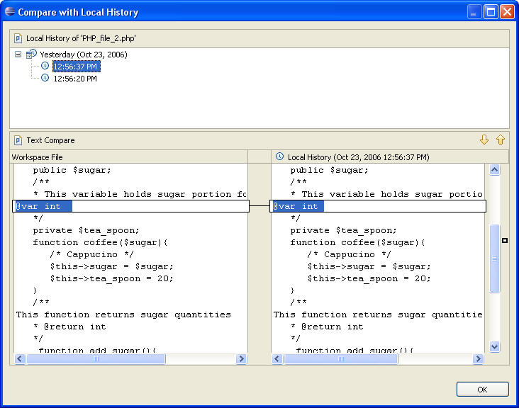

A Local History of a file is maintained when you create or modify a file. Each time you edit and save a file, a copy of it is saved.
This allows you to compare your current file state to a previous state, or to replace the file with a previous state. Each state in the local history is identified by the date and time the file was saved.
Place the cursor into the editor, right click, select: Compare with Local history. The Compare with Local history dialog will appear.

Figure: 1 - Local history
Select a time as the "Workspace file" and one as the "local history". The overall changes that occurred between the selected states at that time are compared with the current file and highlighted.